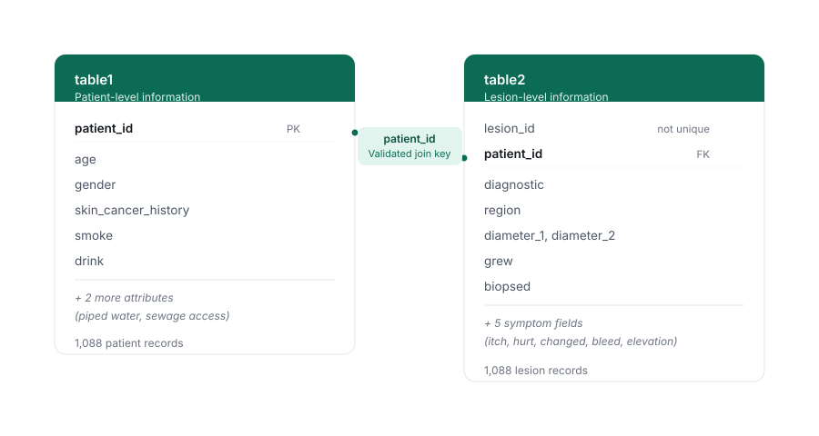
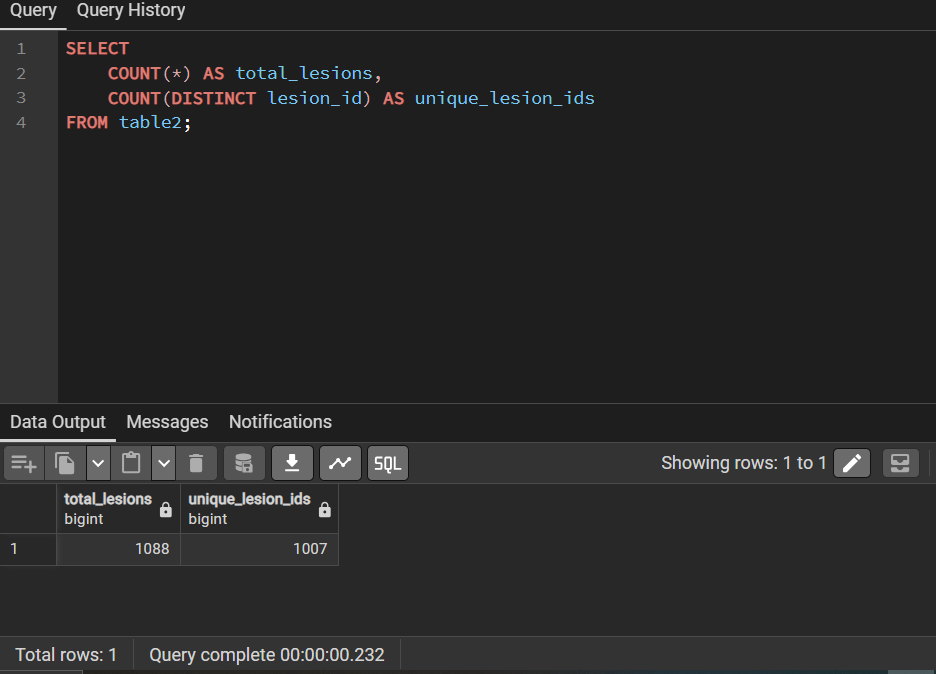
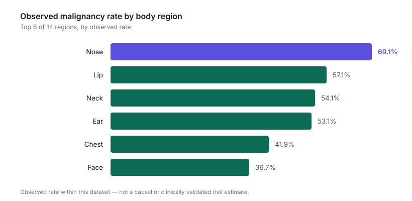

A relational SQL analysis of 1,088 patients and their skin lesion records, exploring
which clinical, environmental and lifestyle factors were associated with malignant
diagnoses.
Tools
PostgreSQL, pgAdmin
Scope
1,088 patients, 6 diagnostic categories
Records
1,088 lesion records
Malignant cases
346 (31.8%)
The business problem
The analysis explored demographic, clinical, environmental and lifestyle
characteristics associated with malignant skin cancer diagnoses. The aim was to
identify patterns that could help inform screening priorities. The data sat across
two related tables, one patient-level and one lesion-level, so it needed a
structured, validated query approach rather than a surface read of the raw records.
The data
The dataset covered 1,088 patients and 1,088 corresponding lesion records, split
across six diagnostic categories. Three were malignant (Basal Cell Carcinoma,
Squamous Cell Carcinoma and Melanoma) and three were non-malignant (Actinic
Keratosis, Nevus and Seborrheic Keratosis). Overall, 346 of the 1,088 diagnoses,
or 31.8%, were malignant.
The patient-level table held age, gender, prior skin cancer history, lifestyle
habits and environmental access. The lesion-level table held diagnosis, body
region, diameter, growth, symptoms and biopsy status.
Database structure
The two tables connect through a single relationship: every lesion record links
back to a patient through patient_id. Before writing a single
analytical query, I confirmed that this relationship held cleanly. Every lesion
record has a matching patient, and no patient has more than one lesion row, so the
join could be trusted throughout the analysis.

The two tables behind the analysis, related through patient_id.
Data quality and validation
Before trusting any result, I validated the structure of the data itself. I ran
NULL checks across every key demographic and clinical field, duplicate checks on
both tables, and a referential integrity check between them. I also tested whether
the identifiers I planned to use actually meant what the data dictionary said they
meant.
That last check mattered more than expected. The data dictionary described
lesion_id as a unique identifier, so I tested it directly:
SELECT
COUNT(*) AS total_lesions,
COUNT(DISTINCT lesion_id) AS unique_lesion_ids
FROM table2;
The result was 1,088 total lesion records but only 1,007 distinct
lesion_id values. This showed that lesion_id was not
globally unique, despite being described as unique in the data documentation.
Because patient_id maintained a validated one-to-one relationship
between the tables, the analysis used patient_id for joins and did not
rely on lesion_id as a unique key. Every other check came back clean,
with zero NULLs across the key fields, zero duplicate patient records and
referential integrity holding as expected.

The query that surfaced the lesion_id discrepancy, run directly in pgAdmin.
Analytical approach
With the data validated, I worked through it in four passes: demographic
characteristics (age, gender and prior history), clinical characteristics
(diagnosis type, lesion growth, diameter and symptoms), environmental factors
(sanitation access) and lifestyle factors (smoking and drinking). For each, I looked
first at raw counts and then, where it changed the picture, at rates, because the
two answer different questions.
Key findings
Previous skin cancer history showed the strongest observed association with
malignancy. Patients with a documented history had a 70.1% observed
malignancy rate, compared with 21.9% for patients with no history. That group made
up only about a fifth of the population.
Growing lesions showed a markedly higher observed malignancy rate than
stable ones. 50.8% of growing lesions were malignant, versus 15.1% of
lesions with no reported growth.
Melanoma had a distinctly larger average lesion size than other
diagnoses. Average diameter was 14.09mm for MEL, against 10.46mm for SCC
and 9.97mm for BCC. The non-malignant categories were much smaller, at 2.62mm and
below.
Observed malignancy rate varied considerably by body region. The
nose had the highest observed rate at 69.1%, followed by the lip (57.1%), neck
(54.1%) and ear (53.1%). All were notably higher than the face (36.7%), even though
the face had the highest raw case count.

Nose recorded the highest observed rate of any region in the dataset.
Lifestyle factors showed a compounding pattern in observed rates.
Patients who both smoked and drank had an 82.1% observed malignancy rate, against
70.6% for smoking alone, 68.2% for drinking alone and 24.5% for neither. These are
observed associations within this dataset, not evidence that the two behaviours
cause malignancy together.
All lesions with malignant diagnoses (100%) were recorded as biopsied, compared with
approximately 15% of non-malignant lesions. This indicates that biopsy status was
strongly associated with malignant diagnosis within the dataset.
Worth investigating
Patients with better sanitation access (piped water and sewage systems) showed
higher observed malignancy rates than those without, at roughly 63% versus 20%.
That is the opposite of what I expected going in. This counterintuitive association
may reflect unmeasured factors such as differences in healthcare access, screening
or diagnostic follow-up, but the dataset does not establish the explanation.
Counts and rates told different stories, and keeping them separate
mattered. The 60–74 age group had the highest number of malignant
diagnoses (120 cases), while the 75+ group had the highest observed malignancy rate
(43.9%). Counts show where the greatest volume of malignant cases occurred. Rates
show the proportion of each group diagnosed as malignant. Keeping the two separate
stopped a high-volume group from being read as the highest-rate group.
SQL spotlight
The data dictionary called lesion_id unique. This query tested that
claim directly instead of trusting it, and it surfaced the 1,088 versus 1,007
discrepancy described above.
SELECT
COUNT(*) AS total_lesions,
COUNT(DISTINCT lesion_id) AS unique_lesion_ids
FROM table2;
This query joins the patient and lesion tables to count malignant diagnoses by age
group. It is the foundation of every demographic finding in the analysis.
SELECT
CASE
WHEN t1.age < 30 THEN 'Under 30'
WHEN t1.age BETWEEN 30 AND 44 THEN '30-44'
WHEN t1.age BETWEEN 45 AND 59 THEN '45-59'
WHEN t1.age BETWEEN 60 AND 74 THEN '60-74'
WHEN t1.age >= 75 THEN '75+'
ELSE 'Unknown'
END AS age_group,
COUNT(*) AS malignant_diagnoses
FROM table1 t1
JOIN table2 t2
ON t1.patient_id = t2.patient_id
WHERE t2.diagnostic IN ('BCC', 'SCC', 'MEL')
GROUP BY age_group
ORDER BY malignant_diagnoses DESC;
Symptoms were stored as five separate boolean columns rather than one categorical
field, so GROUP BY alone could not rank them against each other.
UNION ALL stacks the five counts into a single comparable list. Itch
and elevation came out as the most commonly reported.
SELECT 'itch' AS symptom, COUNT(*) AS num_lesions FROM table2 WHERE itch = true
UNION ALL
SELECT 'hurt', COUNT(*) FROM table2 WHERE hurt = true
UNION ALL
SELECT 'changed', COUNT(*) FROM table2 WHERE changed = true
UNION ALL
SELECT 'bleed', COUNT(*) FROM table2 WHERE bleed = true
UNION ALL
SELECT 'elevation', COUNT(*) FROM table2 WHERE elevation = true
ORDER BY num_lesions DESC;
AVG() returned a value that required explicit casting to numeric before
applying ROUND() with two decimal places. Adding ::numeric
resolved the PostgreSQL type error.
SELECT
diagnostic,
ROUND(
AVG((diameter_1 + diameter_2) / 2.0)::numeric,
2
) AS avg_lesion_diameter
FROM table2
GROUP BY diagnostic
ORDER BY avg_lesion_diameter DESC;
FILTER lets you count a conditional subset and the full group in the
same pass, which is what turns a raw count into a rate. This is the query behind the
strongest finding in the project, the 70.1% versus 21.9% split by prior history.
SELECT
t1.skin_cancer_history,
COUNT(*) AS total_patients,
COUNT(*) FILTER (
WHERE t2.diagnostic IN ('BCC', 'SCC', 'MEL')
) AS malignant_cases,
ROUND(
100.0 * COUNT(*) FILTER (
WHERE t2.diagnostic IN ('BCC', 'SCC', 'MEL')
) / COUNT(*),
1
) AS malignancy_rate_pct
FROM table1 t1
JOIN table2 t2
ON t1.patient_id = t2.patient_id
GROUP BY t1.skin_cancer_history
ORDER BY malignancy_rate_pct DESC;
The query behind the project's strongest finding, run directly in pgAdmin.
From analysis to action
Consider prioritising patients with a documented prior skin cancer history for closer assessment. This was the strongest observed association in the dataset (70.1% malignancy rate).
Lesion growth may warrant closer clinical attention as a signal worth tracking. Growing lesions had over three times the observed malignancy rate of stable ones.
Nose, lip, neck and ear lesions may warrant closer assessment regardless of visible size, given their high observed rates.
Lifestyle history (smoking and drinking) could be incorporated into further screening evaluation, given the pattern observed across lifestyle groups.
The sanitation-access association would benefit from further investigation before informing any decision, because the current data cannot establish what is driving it.
What I learned
Checking whether lesion_id really was unique, rather than trusting the
data dictionary, is a step that is easy to skip under time pressure. It is also the
step that catches problems before they quietly distort a join later on.
Distinguishing counts from rates mattered more than I expected going in. The same
dataset can honestly support "60–74 has the most cases" and "75+ has the highest
rate", and picking the wrong one changes what you would recommend.
The sanitation finding was the most instructive part of the project. Patients with
better piped water and sewage access showed higher observed malignancy rates, the
opposite of what I would have guessed. It would have been easy to drop the finding
or force an explanation onto it. Instead, I reported it as an association that needs
further investigation. Not every unexpected result needs a story attached to it
straight away. Sometimes the honest answer is "this needs more investigation", and
being able to say that clearly is part of doing the analysis properly.
Documented plainly rather than glossed over, because knowing where an analysis stops is part of doing it properly.
All findings are observational associations, not causal relationships.
The sanitation-access finding may reflect an unmeasured factor, such as healthcare access or screening frequency, rather than a direct risk factor. This dataset does not establish the explanation.
The dataset is a single point-in-time snapshot, so there is no longitudinal tracking of individual patients over time.
lesion_id was found not to be globally unique (1,088 records versus 1,007 distinct values), despite being described as unique in the data documentation. It was not used as a join or filter key in this analysis.